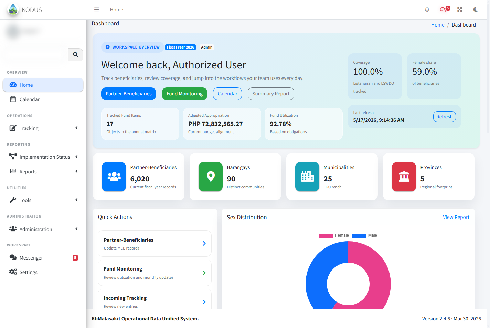
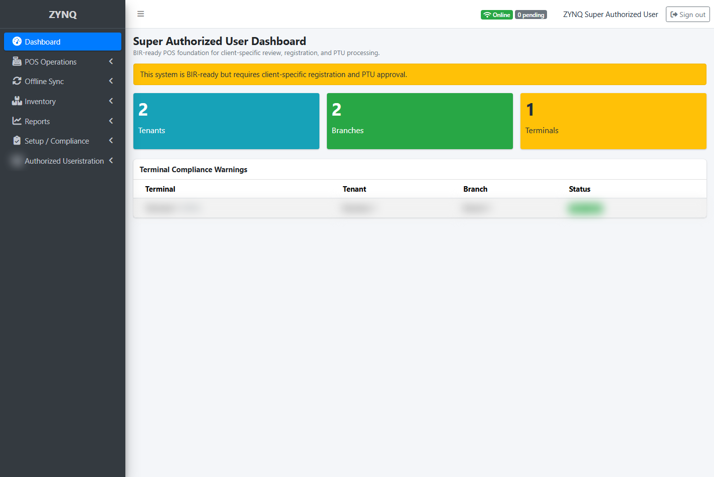

Full-Stack Web Development
Responsive frontend interfaces, JavaScript interactions, PHP/MySQL backend functionality, database design, integrations, testing, and deployment for complete web solutions.
PHP/MySQL Developer · Philippines
BUSINESS SYSTEMS · AUTOMATION · DEPLOYMENT
I turn operational requirements into responsive interfaces, dependable PHP/MySQL workflows, useful reports, and maintainable production deployments.
About
I am a PHP/MySQL developer focused on building and maintaining practical business systems. My work spans responsive interfaces, JavaScript functionality, database workflows, authentication, reporting, Git-based delivery, testing, and deployment. Developer VA support, documentation, and automation complement that core development work and help teams operate their systems with confidence.
Services
Responsive frontend interfaces, JavaScript interactions, PHP/MySQL backend functionality, database design, integrations, testing, and deployment for complete web solutions.
Content updates, bug checks, layout cleanup, hosting support, backups, and small frontend or PHP adjustments.
Database checks, query review, login issue support, error tracing, and fixes for PHP/MySQL web system problems.
Structured report workflows, spreadsheet cleanup, data validation, recurring summaries, and basic automation for repeatable reporting tasks.
System notes, setup guides, troubleshooting references, workflow documentation, and clear handover materials for technical processes.
Photoshop edits, Canva assets, UI cleanup, visual consistency checks, responsive layout improvements, and interface polish.
Git updates, Linux/Nginx checks, XAMPP/Laragon setup support, PM2 process checks, and deployment troubleshooting.
Skills
Featured Projects
Start with KODUS and ZYNQ for production-system experience. Concepts and client-facing prototypes are clearly labeled separately.
A branded coffee liqueur website concept with product storytelling, shop flow, locator, policy pages, and responsive front-end screens.

KODUSScreenshots may be sanitized or blurred for confidentiality.
Production system · Maintenance & supportMaintained PHP/MySQL workflows spanning beneficiary tracking, validation, reporting, fund monitoring, administration, security, and operational troubleshooting.

ZYNQScreenshots may be sanitized or blurred for confidentiality.
Production system · Technical supportSupported POS, inventory, offline synchronization, reporting, invoice setup, compliance, onboarding, audit trails, and administrative workflows.
Screenshots may be sanitized or blurred for confidentiality.
Structured tools and workflows for validating data, generating summaries, and improving recurring technical reporting tasks.
Screenshots may be sanitized or blurred for confidentiality.
Login security enhancements, activity logs, access checks, and authentication-related support for web systems.
Screenshots may be sanitized or blurred for confidentiality.
System guides, troubleshooting references, setup notes, and small automation improvements for repeatable technical workflows.
A local resume scoring platform for ATS readiness, resume completeness, job-description matching, keyword gaps, report storage, and downloadable feedback reports.
A responsive virtual assistant and social media manager portfolio with service sections, tools, certificates, work samples, contact paths, and theme support.
Mockups
A responsive brand and shop concept for Java Lava, including homepage storytelling, product pages, merchandise admin screens, locator, contact, and policy pages.
A responsive digital prayer candle wall concept with animated candles, intention entry, color themes, and a quiet sanctuary-style interface.
A static product sample based on the KAILA founder-grade package, showing client requests, provider matching, offers, validation metrics, operations workflows, and brand mockups.
Experience
Worked on system updates, interface cleanup, issue checks, technical references, and process improvements that helped keep KODUS and ZYNQ workflows easier to maintain.
Prepared clear records, reports, system references, and process documentation with attention to confidentiality, traceability, and technical accuracy.
Handled development-focused tasks such as bug fixing, UI cleanup, deployment assistance, Git/version control support, system checks, and workflow improvement.
Contact
Share the current problem, desired outcome, and timeline. I can help with PHP/MySQL systems, responsive interfaces, maintenance, reporting, automation, documentation, bug fixing, and deployment.
Available for remote project and technical support inquiries.